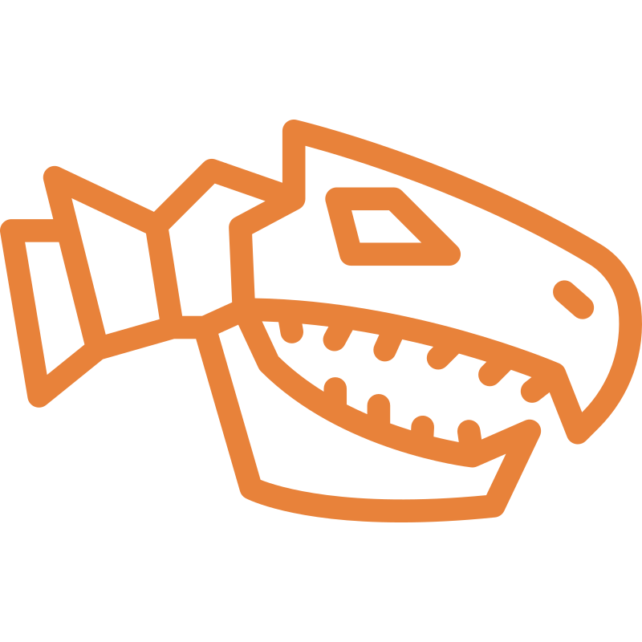

Uma API REST gratuita com informações científicas sobre dinossauros, períodos geológicos e descobertas fósseis. Desenvolvida para entusiastas e desenvolvedores.

0 Dinossauros cadastradosConstruída com foco em performance e precisão científica, a DinoAtlasAPI é uma ferramenta de código aberto que serve dados curados para projetos educacionais, sites informativos e aplicações mobile.
Endpoints arquitetados seguindo os melhores padrões RESTful da indústria.
Resposta em formato JSON estruturado, pronto para consumo imediato em qualquer stack.
Contribua com a base de dados no GitHub. Feito pela comunidade para a comunidade.
Sem chaves de API para requisições públicas. Acesso instantâneo aos dados fósseis.
/api/dinosaurs
Lista todos os dinossauros cadastrados
200 OK
›
/api/dinosaurs/:id
Retorna detalhes de um dinossauro específico
200 OK
›
/api/periods
Lista períodos geológicos (Triássico, Jurássico, etc)
200 OK
›
/api/families
Lista famílias taxonômicas de dinossauros
200 OK
›
fetch("https://api.dinoatlasapi.com/api/dinosaurs") .then(response => response.json()) .then(data => { console.log(data); });
{
"id": 1,
"name": "Tyrannosaurus Rex",
"period": "Cretaceous",
"diet": "Carnivore",
"length_m": 12.3,
"found_in": ["North America"]
}
Construído segundo os padrões modernos
Node.js
Express
JavaScript
Rest api
Json